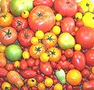

Magnolids


SAFARI
Users
- General & History
- Varieties
- Chilis and sweet peppers - S. Capsicum
- S. Solanum
- S. Physalis - Tomatillo, Cape Gooseberry
- Other Nightshades - Edible & Toxic.
- Health & Nutrition
General & History
Medieval and Renaissance Europe knew mainly the toxic Black Nightshade (Atropis belladonna) and it's near relatives, but later Eggplants were brought from the East. With the discovery of the New World came a flood of nightshade varieties, some edible, some toxic, some used for their berries (tomatoes, chilis), a few used for their roots (potatoes), and some used for their toxic leaves (tobacco).
Carried worldwide by European traders in the 1500s the three main New World food varieties, potatoes, tomatoes and chilis (including mild bell peppers) are so thoroughly incorporated into all the major cuisines it's difficult to imagine what they might have been like before 1500.
Varieties
Nightshades are now so important to all our cuisines (with the possible exception the Inuit and a few other isolated groups), each major group has its own sections, and a separate section for the minor ones as well.
Tomatoes
- [Solanum lycopersicum]
Native from Mexico to Peru, the versatile tomato has become one of the
most important of fruits used as a vegetable. Used raw in salads, as the
primary ingredient of many sauces and condiments, and as a major flavoring
ingredient in soups and stews.
Potatoes
- [Solanum tuberosum]Native to Peru, the potato is well adapted to growing at high altitudes and
in harsh environments. The versatile tubers of this plant have become a welcome
source of nutrition worldwide, though dependence on single varieties has
occasionally been disastrous, most notably in Ireland.
Chilis
and sweet peppers - [Solanum capsicum]Native to Central and South America, chilis were quickly carried all over
the world by Portuguese and Spanish merchants during the early 1500s. They
have been enthusiastically adopted into the cuisines of nearly every tribe
and country, particularly in the tropics. They provide both spicing and a
degree of protection from spoiling.
Eggplants
- [Solanum melongena]Native to Asia, this vegetable entered European cuisines rather slowly due
to its obvious resemblance to the deadly black nightshade and its berries.
It is named for varieties that are white and about the size and shape of
goose eggs.
Physalis
- Tomatillos and others - [Physalis]A worldwide family sometimes called "husk tomatoes". The most used is the
Tomatillo, essential to many Mexican green sauces. Others are eaten in their
native regions.
Other Nightshades
- [Solanaceae]Nightshades, some deadly, some addictive, some used as mind
altering substances, some medicinal, and others that yield attractive
and tasty fruit and/or nutritious leaves.
Health & Nutrition
Followers of Michio Kushi's Macrobiotic movement condemn all nightshades out of hand as highly destructive to the human organism. Since I eat tomatoes by the flat (raw with salt), drink chili sauce out of the bottle, cook eggplants early and often, and consume potatoes in all forms from raw to deep fried to distilled in bottles with Russian labels, I probably died 30 years ago and just never noticed.
The true proof of damaging diets is demographics. No correlation has been found linking bad health to high consumption of nightshades nor any correlation with shortened lifespan in nightshade consuming populations. Ireland and Germany are still populated despite heavy consumption of potatoes, Italy has not suffered from tomatoes nor Asia from eggplants - and the whole world has survived chilis.
Most nightshade plants are mildly toxic and some are very toxic so you should eat only the parts commonly consumed and found safe. I remember some dingy '70s health food advocate writing, "We throw away what is probably the most nutritious part of the potato, the sprouts". I hope nobody followed her suggestion - it wouldn't kill you, but it might make you quite sick.
Nightshades contain more or less of the alkaloid nerve toxin Solanine, particularly in the green parts and sometimes in the berries, but the parts commonly eaten contain none or negligible amounts. Potatoes exposed to light have some in the skin to the extent it has turned green, and it is said some people are sensitive to this but I've never noticed a problem with greenish potatoes, even when only lightly cooked. Your mileage may vary.
Solanine toxins are destroyed by thorough cooking, so even the toxic Black Nightshade berries have been used safely in preserves and pies. This detox technique explains why some early Italian tomato sauces were long cooked, presuming all nightshade berries needed the detox treatment (there were also economic reasons). Today even raw tomato sauces are commonly used in Italy, and most sauces are cooked for a short time.
Nightshades and Arthritis: The jury is definitely still out here. Some people report good results from eliminating nightshades. Some report no effect at all and others report the opposite. There is no consensus from properly conducted studies - and there is a lack of such studies in any case. There is no consensus from people who have tried eliminating nightshades either.
This is all complicated by the very high variability in individual reactions to natural and unnatural chemical compounds. If you suffer from arthritis pain, some clinicians suggest cutting out nightshades entirely (some say for three weeks, some for 3 months) and see if your condition improves - but be realistic and watch out for the placebo effect. If this does help you, don't presume it will help all others - again, the high variability from one person to another, or one demographic to another.